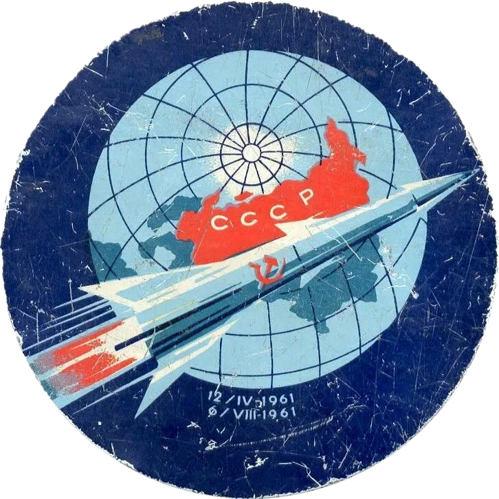
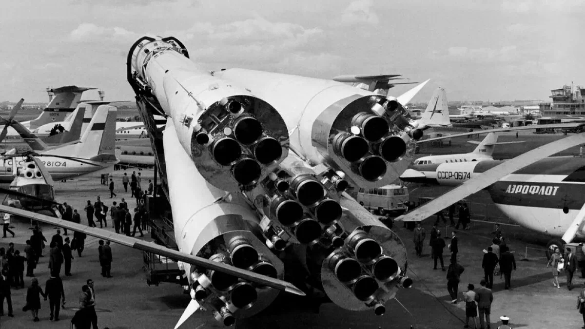
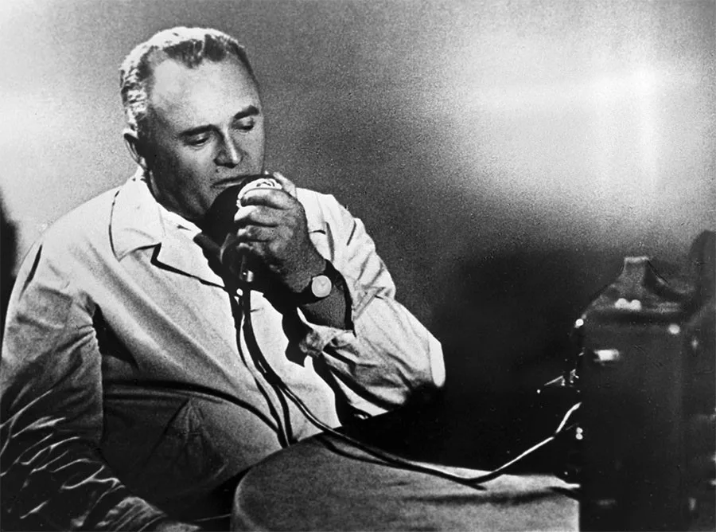
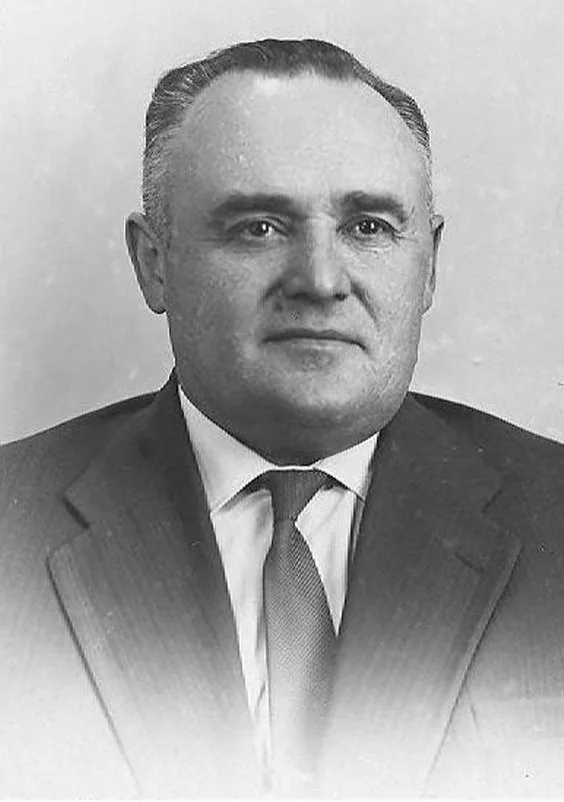
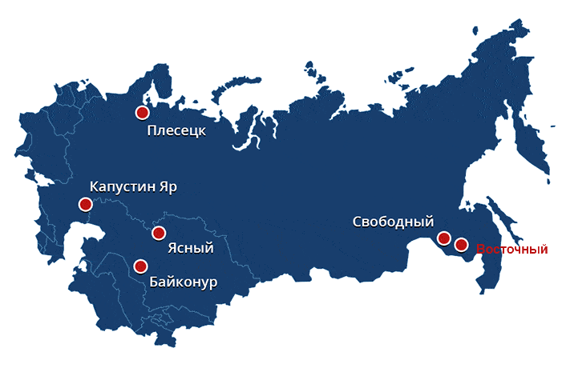

Космическая программа СССР

Космическая программа СССР — программа изучения и освоения космического пространства в СССР. Сутью программы было освоение космоса и поиск возможностей для его использования в мирных целях. Работы по освоению космического пространства начались ещё в 1930-е годы, когда энтузиасты ракетной техники во главе с Сергеем Королёвым создали Группу изучения реактивного движения (ГИРД). Однако настоящий прорыв произошёл после Великой Отечественной войны, когда советские инженеры получили доступ к немецким ракетным технологиям.

Сергей Павлович Королёв

Сергей Павлович Королёв — советский учёный, конструктор ракетно-космических систем, один из основателей практической космонавтики. Ракетно-космические системы, разработанные под руководством Королёва, позволили впервые осуществить запуски различных искусственных спутников Земли, искусственного спутника Солнца (1961), полёты автоматических межпланетных станций к Луне (1959), Венере (1961), Марсу (1962), произвести мягкую посадку на поверхность Луны (1966).

Космодромы СССР
